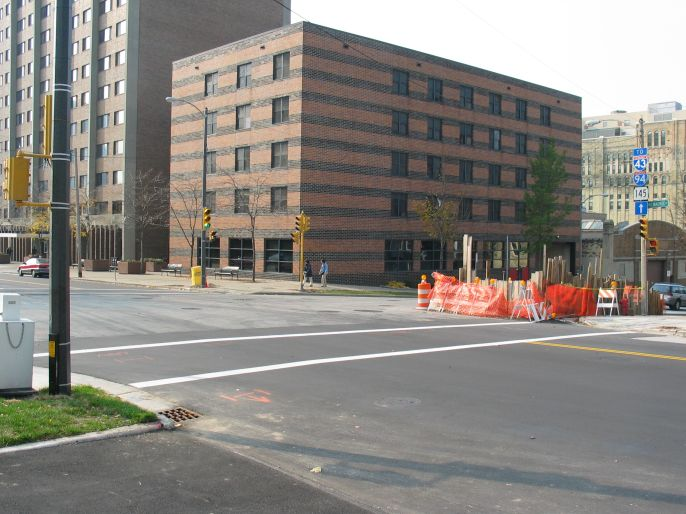
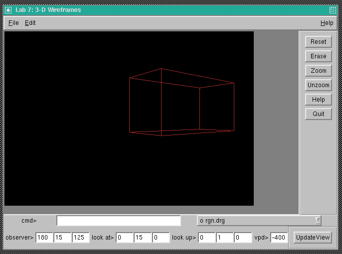
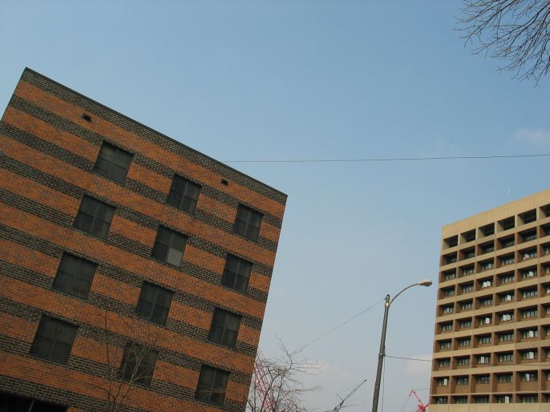
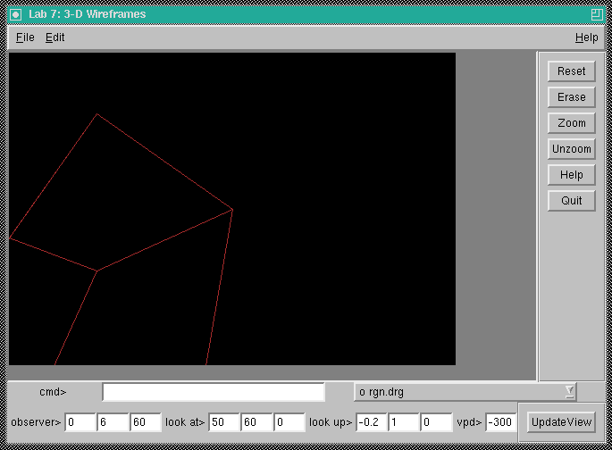

Here is the data file that was used to generate the renderings below. You will probably need to adapt it to be readable by your program.
| Viewing Data | Photo | Rendering |
|---|---|---|
| obs: 180 15 125 look@: 0 15 0 up: 0 1 0 vpd: -400 |
 |  |
| obs: 0 6 60 look@: 50 60 0 up: -0.2 1 0 vpd: -300 |
 |  |
Note that the viewing plane distance is scaled to convert from world/view coordinates in feet to device coordinates in pixels. It can also be thought of as controlling how wide angle or telephoto the lens is.